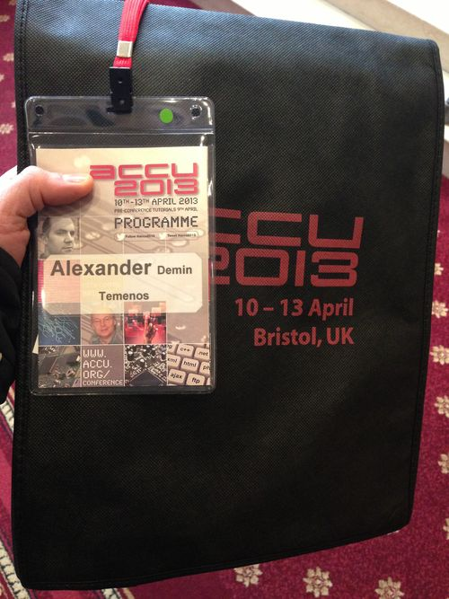
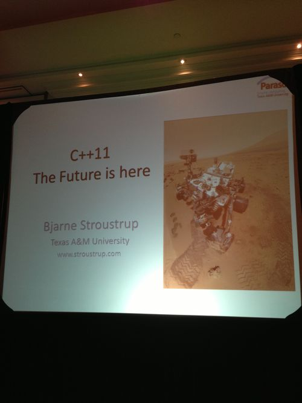
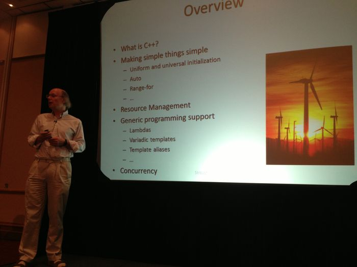
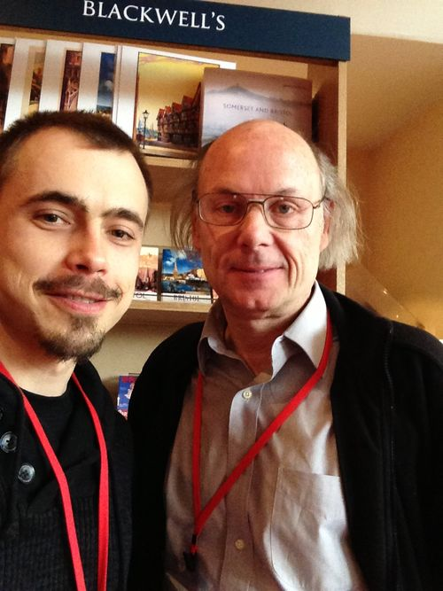
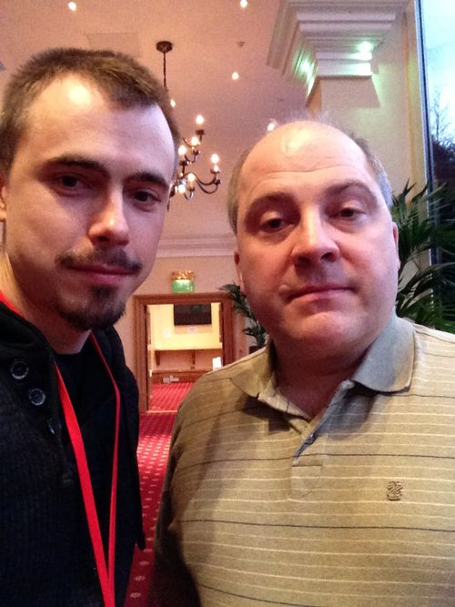
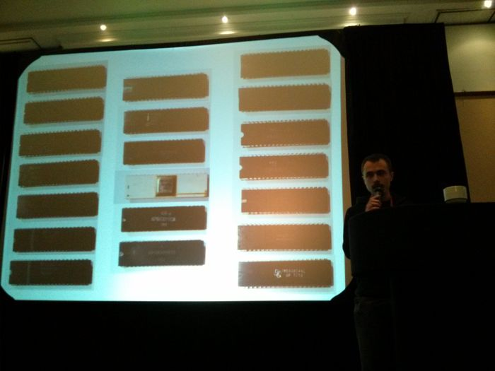
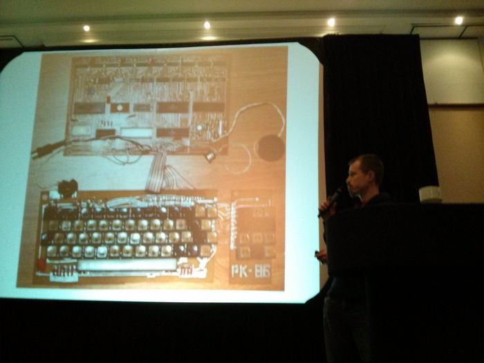

Уф, около четырех месяцев ничего не писал в этот блог, хотя материал имеется. Два интереснейших интервью лежат “в столе”, ожидая перевода. Сейчас у меня не самый простой период в жизни по многим фронтам, и многие проекты задвинуты. С работой небольшой застой, но вот-вот должно измениться. А пока я целиком в совершенной иной теме – спорт, еда, диета, кулинария и все что с этим связано.
Подсев на диету “медленных углеводов” (Slow-Carb), я завел блог Диета и спорт для ленивых, который веду преимущественно с айфона (О Tumblr! Ты лучший!). Активно “массирую” фотографиями Инстаграм и в частности едой, которую готовлю.
Но в апреле я таки съездил на ежегодную конференцию ACCU 2013.

В этом году она проходила в Бристоле и была на 99% посвящена новому стандарту C++ 2011. Кроме этого одним из генеральных спонсоров была компания Блумберг, поэтому было непривычное количество друзей и знакомых.

Гвоздем программы был сам Страуструп, лично.

Мне до Бристоля два часа на машине, и это было удобно. А тот момент я уже “сидел” на диете Slow-Carb, поэтому поездка не обошлась без ее элементов. Про как и почему, про гантелю в багажнике и kettlebell swing я писал в кулинарном блоге в серии постов, начиная с Эксперимент по готовке еды в командировке.
Ну все, хватит про кулинарию, и ближе к программированию и С++.
Все презентации были, как я уже сказал, про C++ 2011. Многие темы уже оскомину набили, но для освежения памяти полезно. Конечно, выступления мастеров типа Бьярна Страуструпа, Джона Лакоса, Энтони Уильямса или Кевлина Хенни всегда классные.
Не могу не похвастаться парочкой фотографий, что удалось сделать.
Мастер

Джон Лакос

А в качестве развлекательного бонуса фотографии моего пятиминутного экспромта в рамках Lighting Talks, где я рассказываю про свою коллекцию микропроцессоров Intel 8080 и про эмулятор Радио-86РК.


Увы, в этом году мне пришлось самому оплатить конференцию вместе проживанием, но я ни разу не жалею о таком варианте отпуска, ибо было очень интересно и полезно.
На сайте ACCU доступны практические все материалы конференции.